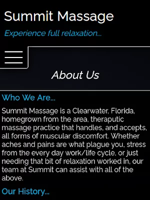
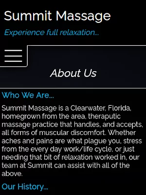
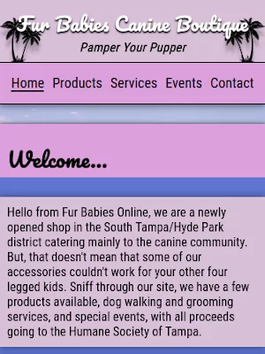
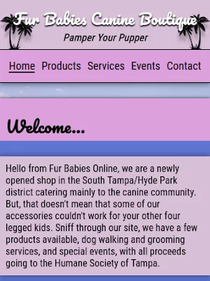

- Hello & Welcome -
Thank you for stopping by to see what I've created here. I just wanted to hello and give a little introduction before you went on your way through the rest of my site. My name is Nate Moscato, I am 41 years old, residing in Clearwater, Florida (born and raised where others come for vacation), and progressing as a Web Developer for a little over two years now. I started out with the front end ideas, but recently tried getting into more of the back end concepts, mainly Laravel and what that framework has in hiding.
A Dive Inside...
I am on a journey to grow my creativity in the ways of web design by producing manageable, cleanly written code, alongside responsive and intriguing websites. The sections covering my Education and Projects gives more on my schooling and creations. After 24 years in restaraunts, I thought pursuing something new could be refreshing, so I took to Computer Science. A more in depth look into that portion can be found down in my Work section if you'd like.
Skill sets gathered and obtained over the years can be seen through my collection of Qualities. Although not all are listed, you can get an idea of some abilities possessed. If you would like to Contact me, please do so through any means listed down below. There is a .pdf version of my resume down with my media and contact links as well. My intentions are not to take over the world, but merely to create a comfortable life while building creative and engaging products.
Educational Value...
I returned to school in the Spring of 2016 and began taking classes at St. Petersburg College. I enrolled in the Computer Science program to learn how to code. A few semesters in I had my first class involving the creation of websites. The creativity of design, potential freedom of work schedule, possible income, and change of scenery is what grabbed my attention.
After a little experimentaion, I switched my course track to accomidate Web Development. I had never done, or thought about doing, any kind of previous coding. I gravitated towards the idea that technology is only gaining traction, and it would be a solid field to get into. Everybody needs a website right? After two and a half years of a part time class schedule, to go along with a full time work one, I finished my Associate in Science and a certification in Web Development. Now I pursue it as a new career while also continuing to learn.
Projects Created...
The stack used to build this site here is HTML, CSS and vanilla JavaScript. Shown below are a handful of projects that I've also built. You can page across through each slide using the arrows, and if you'd like to visit a build, just click on the picture. For the carousel-like effect that contains the projects, I used a JavaScript library called Glider.js. I've toyed with it here and there, but this is the first time I've used it in a project. It's extremely lightweight with smooth transitions, and very mobile friendly. It's not a true carousel as it doesn't have infinate looping, but it's a really nice alternative.
This portfolio, and all projects, other than the first one (YSO), that are shown, is hosted using GitHub Pages. There are a handful of builds using Laravel, PHP, and some jQuery whose code can be seen at my GitHub as well. Those builds just mentioned are unfortunately not hosted anywhere outside of my machine in a local environment. All the code and full descriptions, plus a few more, can be found through my GitHub link here or the link at the bottom of the page in my Contacts. If you're keen on what you see, reach out to me via my social media links or email below as well.

This is an application that pins the current location of the International Space Station. It gets the station's data via an api from a website called Where the ISS at?. It uses the latitude and longitude for the plots. The api is hit and data is refreshed every 2 seconds to show a little movement. Everything that has to do with the map itself is done using a library called Leaflet.js. It's an open-source library that's super friendly for mobile devices. It has a ton of options to build all sorts of interactive JavaScript maps.
This is a homemade calculator I recently rebuilt. It can handle some basic mathematics, but don't expect it to get you through any Calculus classes. I rebuilt all the HTML, reworked all the JavaScript, added a litle transition with proper evaluations, and updated all the CSS. This was a fun little build to revisit.
This is my first build as a professional Web Developer. It started off as an experiment in creating it using only a front end stack of HTML, CSS, and vanilla JavaScript as a one-user application for testing. I was then tasked to rebuild it but using PHP. This led me to Laravel, and my intro to a back end framework. This also introduced me to the use of phpMyAdmin, MySQL, Model View Controller (MVC) concept, Blade Templates, Google Maps API, and a re-introduction to jQuery. A lot of what was just mentioned above was a first time use for me.
An issue I faced after installing Ubuntu and Mint where Pulse Audio would sleep after a short time of silence. When the volume was adjusted or audio started, the speakers would crack and pop briefly. This is a short walkthrough I did to help stop that.
This was a project created as an assignment while still at SPC. We were given a choice of ten topics to choose from. We were then tasked with creating a site for the business type we chose.
The original app was a udemy.com project built by Brad Traversy of Traversy Media. With this one, I switched up the color scheme, backgrounds, action timing and a little of the code as to make it my own.
 

Summit was built as a result of a friend running her own mobile massage company. This is not her site, the idea to do so came from her business. A practice build to add here when this site was figured out.
 

One of the earlier sites I constructed as a student of SPC learning the start of Web Development. This is the result of late nights staring at my screen to get the littlest adjustment down until I was OK with it. It's just a little mock up for a fictional doggy darecare place.
Depending on your browser you can get different language choices. This is a portion of a project that was built in a udemy.com course taught by a coding wizard named Brad Traversy. He's the owner and founder of Traversy Media.
A History Of Work...
I have 24 years in the restaurant industry, most served with the same company. When I started in restaurants, I was bussing tables for the first four years of my young hospitality life. After a fluke of someone calling in sick one evening, and me filling in for that night, I was moved to the kitchen. I quickly learned all the skills needed to smash through the ranks.
Once my skills were up to par, I was moved around to a few different locations as a store opener and trainer. Ten years later, I was awarded the first kitchen directly under my management at the Brandon, Florida location. My staff and I proceeded to set record numbers in multiple categories for the next five years while I was there.
My last stop was Sarasota, Florida, where my staff and I again set record numbers for the next two years. While doing so, we were also a food test kitchen, and one of the top "Manager in Training" locations. After two and a half years, I returned to the Tampa Bay area and decided to go back to school, attending St. Petersburg College.
After my return, and while attending school, I continued on in kitchen work as a lead cook for a country club in Countryside, Florida. Upon completing my schooling, and a year and a half of searching, I landed my first development role as a Front End Developer for a local marketing group.
-
Web Developer Pennexx Foods05/2021 - 03/2023
Front End Developer for a marketing group located in Clearwater, FL. I was tasked with building out their prototype coupon delivery app called YourSocialOffers.com. I transitioned into a back end role to rebuild the same app using Laravel, a PHP framework. A large amount of this application is first time uses for me with these concepts and ideas. A homepage template was used to get a general idea, but I was also allowed to be creative on it as well.
-
Lead Cook Countryside Country Club02/2018 - 05/2021
Assisting in the daily setup and operations of the corporate kitchen at the Countryside Country Club located in Clearwater, FL. Our daily operations include catering to large events, weddings, parties, and celebrations. Along with cooking for members and golfers that pass through for the day.
-
Line Cook Carrabba’s Italian Grill01/2015 - 02/2018
Assist in the daily routines of opening and operating a corporate kitchen for Carrabba’s Italian Grill, located in St. Petersburg, FL. Including but not limited to scheduling, ordering, and organization of the kitchen.
-
Kitchen Manager Carrabba’s Italian Grill01/2010 - 01/2015
Responsible for the main operations of my second multi-million dollar kitchen for Carrabba’s Italian Grill, located in Sarasota, FL. Duties including, but not limited to, scheduling, price watching and ordering for multiple deliveries on a weekly basis, cleanliness, organization, and continuous motivation for my staff, also setting record financial numbers.
-
Kitchen Manager Carrabba’s Italian Grill04/2005 - 01/2010
Responsible for the main operations of my first multi-million dollar kitchen for Carrabba’s Italian Grill, located in Brandon, FL. Duties including but not limited to, scheduling, price watching and ordering for multiple deliveries on a weekly basis, cleanliness, organization, and continuous motivation for my staff while setting record financial numbers.
-
Line Cook Carrabba’s Italian Grill04/1997 - 04/2005
Assisted in the daily routines of opening and operating a corporate kitchen for Carrabba’s Italian Grill, located in Clearwater, FL. Duties being learned at the time included, but not limited to, scheduling, ordering, and organization of the kitchen.
Skills Possessed...
Throughout the years, one gains skills and qualities that help construct abilities to be successful at life and survive in the ever changing world. Some retained, others not, all add to the learning experience, from child to adult life. Listed would be some of those qualities that I myself have come across. Some have more use than others, but they all add up in one way or another.
- CSS
- GitHub
- Glider.js
- Google Maps
- HTML
-
JavaScript
- jQuery
- Laravel
- Leaflet.js
- Linux
- MySQL
-
PHP

- phpMyAdmin
- Tailwind
- VS Code
Ways Of Contact...
If you would like to contact me, by all means please do, reach out if you'd like. Check out some of my code and projects on GitHub, drop by LinkedIn, or send an email my way. If you'd like, you can grab my resume below as well. I look forward to meeting new people, making new friends.
New concepts are still being learned every day. I have found Web Development takes a rediculous amount of patience. Mixing this patience, along with learning new skills, amounts to more abilities. I am open to, and very interested in, any freelance builds, job opportunities or communications. Also, feedback of any kind would be greatly valued.
I thank you for, and very much appreciate, your time in stopping by
and taking an interest in what I've built here,
Nate